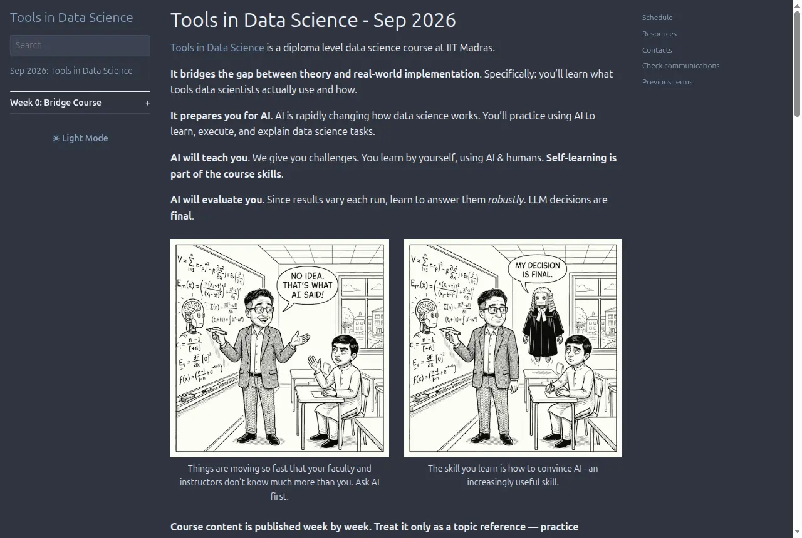
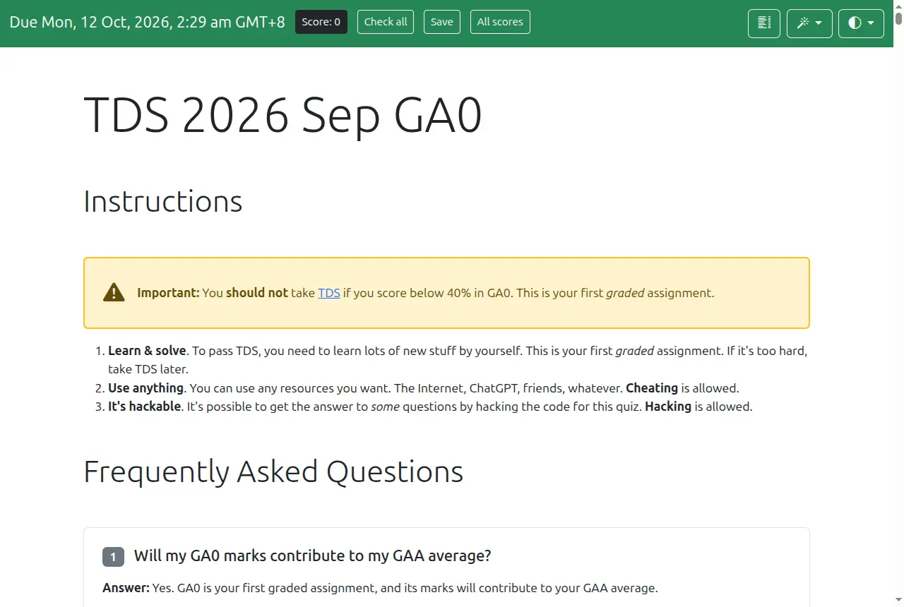

The orientation began in the wrong room
Before anyone said a word about data science, there was a mix-up. The email had one meeting link; the calendar invite had another. About seven students were sitting in the wrong call — and so, for a while, was the instructor. 03:31
Nobody designed that. But it was a fair preview of a course that, as the next hour made clear, sometimes does design exactly that: incomplete instructions, a second channel you were supposed to notice, a problem that is solved by whoever figures out where the real room is.
“So, a simple five-minute saying ‘TDS is hard’ will be the orientation, and then we’ll directly dive into ‘why is it hard?’”
JK was only half joking. For four or five terms, he said, the complaint had been the same: TDS is very hard, and it doesn’t feel like it is testing what students know. What followed was not five minutes on hardness. It was seventy minutes of students, one after another, pushing on the course’s philosophy to see whether it held.
- Ownership. “Get the job done.” How is secondary.
- Exams are the curriculum.
- Agents can execute. You specify, orchestrate & verify.
- Confusion and misdirection are intentional. Figure it out.
- Take initiative. Don’t limit yourself to what you’re told.
- Humans are tools, too. Learn to collaborate.
- This course is constantly changing. Adapt.
Seven principles, “at the moment” — because of number seven. The rest of this story is what happened when students tested them.
She scored 34.5. She couldn’t say what she’d learned.
Twenty minutes in, Sushmitha unmuted. She had joined late and wasn’t sure if her question had already been covered. She had attempted GA0, the course’s first graded assignment — 25 questions worth 35.5 marks — and scored 34.5. Nearly perfect. And that was the problem.
“I’m able to score 34.5 after attempting through many failed attempts. So, my question is, if somebody asked me today, ‘What have you done or what have you learned from GA0?’ I have no answer for that because I have extensively used the LLMs to solve those questions.”
Sushmitha, student 22:38
Here is the paradox in its purest form. When agents do most of the visible work, learning becomes hard to see from the inside. The score says one thing; the student’s own introspection says another. Which one is lying?
Anand didn’t answer the question she asked. He answered a phrase she had used in passing.
“There’s one thing that you said that actually helps me answer this question very well, which is: ‘after attempting through many failed attempts.’ And that is the key.”
His argument: if you couldn’t do something before, kept failing, and can do it now, something changed — even if you can’t name it. “I am less worried about you not being able to name what you have learned,” he said, “but I know that you have learned because you were not able to before and you are able to now.”
Then he reached for an analogy from forty years ago.
What it feels like you learned
- “I just learned to use software.”
- Not multiplication. Not how to split principal from interest.
- Not “a whole series of things” a calculation expert would expect.
What Excel users actually learned
- How do I find help in Excel?
- How do I know whether a formula exists?
- How do I compose formulas into a new one?
- How should I organise my spreadsheet?
To someone who only knows calculation, those skills look like nothing. “I am in the position of that person,” Anand said — the skills of the AI era don’t have settled names yet either.
He offered a few of the words that are starting to appear 25:00 — and admitted they were provisional:
“You have not been able to name it; I’m also not able to name it very well.”
It is a generous answer, and a slightly risky one. A score after many failures is evidence that something in the workflow changed — not proof of what changed, or that it will transfer. Later in the call, another student, Sairam, would mention that he too had hit 34.5 — and watched the portal reset him to 28.5. Scores, it turns out, are also things you have to verify. The rest of the session was, in effect, a long negotiation over Sushmitha’s question: if the agent did it, what exactly is mine?
A course that rewrites itself every term
JK’s explanation for the difficulty was structural. “Every term has been a completely new version of TDS,” he said 05:39, tracking a field where “the practical aspects of the tools in data science have become more agentic.” The programme’s ask: embrace “this agileness that is happening outside,” because not adapting to it “will hurt you in the future.”
Anand put it more bluntly. This wasn’t true three months ago, when agents were less capable, he said; it certainly wasn’t true six months ago.
“We are adapting the course to technology which obviously is moving forward very rapidly and is affecting multiple areas, which means that the course is doubly hard.”
Doubly hard because the skill is tough, and because the usual escape hatch — copying from seniors — keeps closing. (“Copying is a good thing, by the way — please copy,” he added. The course just keeps making it less useful.)
Why everyone is tired by lunch
Anand opened with something JK had mentioned earlier: these days, both of them felt tired by the afternoon, not the evening 06:44. His explanation came from a TEDx talk by Kristina Kallas, Estonia’s education minister, framed through Bloom’s taxonomy: LLMs and agents are taking away the bottom layer.
“The easy-to-think-about stuff is their job; the hard-to-think-about stuff is our job.”
He went further — that harder thinking literally burns more of the brain’s energy, which is why the tiredness arrives early. Treat that as a working metaphor rather than settled physiology: a 2025 review in Trends in Cognitive Sciences describes the mechanisms of cognitive fatigue as still debated, with both metabolic and motivational accounts in play1. JK later sharpened the point in a way that matters more for students:
“You should not be tired by the AI’s slop; you should be tired by the rigorous amount of review that you have to do with AI, rather than just on seeing the entire thing coming from AI.”
A student named Sam asked it in the chat. “I don’t know, Sam,” Anand began — and then told them what he was doing. Three months earlier he had started push-ups with “practically no muscles”: 10 a day, then 11, then 12.
10 → 11 → 12 → … → 110
He shared his screen to show the same idea applied to attention: a log, started 14 September, where each day he sets a timer for n minutes of doing something hard while tired, and marks the result 20:56.
His honest update: ten minutes of focus no longer felt like a strain, so the load needed to go up — and he had skipped the last three days. Incremental loading, not heroics.
Anand’s parting advice to one student was the same idea in a sentence: “Use AI more to the point where you get tired. If you are getting tired, you are progressing.” 37:05 It’s a good motivational rule. It is not, by itself, a good diagnostic — and that distinction deserves its own page.
Productive struggle
- Retrieval and formative testing, spacing, interleaving and “productive failure” have real evidence behind them.
- Struggle that resembles the work you will actually face later.
A 2026 review of “desirable difficulties”2
Arbitrary friction
- Feeling that something is hard is not evidence that it teaches. The same review warns against confusing perceived difficulty with benefit.
- Cognitive-load research says to cut extraneous load while tuning the useful challenge.
A 2025 comparison with cognitive load theory3
The course’s own data hints at the good kind. In last year’s feedback, students who mentioned the timed exam’s pressure rated the course higher (2.61 vs 2.33) — a hint, not proof. And in a conversation about AI in education this August, Anand and an educator drew the line precisely: productive, intellectual struggle — not the struggle “to dig a hole and in the evening fill it back.” The test for every hard thing in TDS is whether future work will still contain it. A cramped exam portal fails that test. A misleading specification passes it.
Ignore the videos. Solve the problems.
The second principle turns the usual classroom upside down. There is course content — the teaching assistants prepare it — but it is not where learning is supposed to start.
“Exams are the curriculum… Don’t read that content and then solve the problems; solve the problems, and if you fail, look at the content.”
A student in the chat tested it directly: how important are the course videos on YouTube? The answer was as blunt as anything said all evening 25:59: “No content is important unless you have a need for it… ignore all the videos. Solve the problems.” Watch one of Anand’s videos for a minute; if it isn’t helping, toss it. Try five sources; when the sixth works, “now you’ve discovered a new source of learning.”
“Why should your learning be only limited to half a dozen things that I’m providing when the entire world is there and the entire intelligence of all agents is there?”


There is an obvious tension here, and it is worth naming. Someone is still writing all that content — and it is still useful when a problem exposes a gap. The claim isn’t that content is worthless; it is that content is a reference you pull, not a syllabus you push through. That matters most for the one exam that is different.
The end-term, Anand explained, is “the only assessment where you don’t have access to the internet,” your classmates, or most tools 30:22. It tests what can only be tested without an agent: “do you know how to prompt, do you know how to verify?” Asked by Biplab whether it would draw on graded-assignment questions or the recorded videos, his answer was “most likely neither” — the questions are application-based, and the preparation is the practice:
“Your preparation for the end-term is not studying before the end-term; it is practicing all of the examinations. That is the curriculum.”
What 180 attempts at GA0 look like
If the exams are the curriculum, GA0 is the first lesson. It is open from 21 September to 11 October, and it spans browser devtools, GitHub, file wrangling, APIs, deployment, local models, evaluation rubrics, property-based testing and a network-game detective puzzle. Here is how the public attempts looked the day after the orientation.
39 people already had full marks; 58 were stuck below a quarter. With the deadline still days away, the low hump is partly people mid-attempt. But the shape matches the course’s bet: once you get the delegate-and-check loop working, questions fall quickly; until then, few do.
Source: the course team’s exam dumps, aggregated with no personal data. These are partial operational numbers from the public, auditable version of the exam — not final cohort outcomes, and not the ~1,066 enrolled students.
The hardest question — solved by fewer than three in ten — is the one most like a real investigation: probe a transaction graph with a limited number of queries to identify the compromised account and the shortest proof path. No amount of pasting it into a chatbot solves it. You have to decide what to ask, in what order, and how to know when you’re done. Next hardest: getting a local model running with Ollama, and deploying an endpoint. The two easiest — at 78% — were computing a variance and hunting a bug with property-based tests. Execution is cheap. Setting up the environment, and knowing what to check, is not.
The agent executes. Everything else is yours.
“Use agents,” Anand said 13:24 — “Codex, Claude Code, GitHub Copilot, ChatGPT, Perplexity, what have you. The better the agent, the better you’ll be able to get the job done.” Earlier he had been explicit that this is a shift for the course itself: “agents are able to handle the tools, so start using agents even more than the tools, though an awareness of the tools helps.” 09:12
But handing over execution doesn’t shrink the human job. It moves it up.
“The agent will do the execution; your task will be: how do you give it the right information? How do you make sure that it is correct? And how do you set it up so that it will be able to do the job right?”
Give it the world
- The question says “check this link.” Can your agent open it, or do you paste it in?
- Part of the instruction isn’t in the spec: the nearest landmark to an obscure village, findable only on Google Maps.
- “Run this application, figure out something from it” — you carry its context to the agent.
Wire the hands
- “Can your ChatGPT control a mobile application?”
- “Can your Perplexity deploy to GitHub?”
- Choose what to delegate, to whom — agent, tool or person — and in what order.
Prove it works
- The beginner’s answer: “Oh, when I tried it, it worked.”
- Agents may not produce the same result twice.
- The real bar: correct 99 times out of 100. 14:50
The last column is the one that rewrites the course. “How do we know that the agent’s gotten it right?” Anand asked 10:30. “How do we know the people have given you the right answer? Do we know how to ask the right questions to be able to verify it?” His summary of the ethos: “get the job done somehow correctly.”
There is a reason this is now the focus. In June, Anand and a student pointed coding agents at a TDS-style exam designed to resist AI and walked away; they scored 9/10 and 10/10. If an agent can do the execution unattended, a course that only tests execution tests nothing. What’s left is ownership — which Anand called one of the few skills likely to survive “even after AI takes over your job”:
“I don’t care if the agent is able to do it or not do it; I’m giving you the job — get it done.”
“What is 1 + 1?” is not the question
Principle four is the one that makes students angriest, and Anand explained it with a deliberately mischievous example 15:37. Try it.
What is 1 + 1?
“If you type ‘2’ in the answer, it will say wrong. You’ll say, ‘Wait, the question says 1+1!’ Yes, but there is a hidden piece of text.” The point isn’t the trick. It is that real requests arrive the same way:
“Somebody will say, ‘Look, I want you to build me a solution that can optimize my, let’s say, supply chain workflow.’ What they really want is to help them tell their boss that they have already optimized it — which is a very different problem.”
So the course says it outright: you will be given “incomplete information… confusing information… literally wrong information,” and the problems are still “broadly solvable.” 16:21 The skill being trained is skepticism about the obvious specification — “both when it’s coming from AI as well as coming from anyone in this course.” That includes the instructor. It also explains GA0’s strangest line: “It’s hackable… Hacking is allowed.” Reading the page’s source is a way of reading between the lines.
“Should we concentrate on the how?” — “If you have time.”
Sushmitha’s worry came back in three more forms. Rakshana asked whether students should study how the LLM was approaching each problem 27:08. Biplab asked whether they should be able to explain their solutions 47:20. Divyansh asked whether, after getting the right answer, they should go back and ask the LLM how it got there 53:42.
First, Anand reframed what is being tested. “I am testing the competencies that the industry will be expecting from graduates” — will, not does. By his rough estimate, only 2–5% of companies have caught on, the ones hiring forward-deployed engineers; more will by the time this cohort graduates 27:40. (That’s an impression from his vantage point, not a labour-market statistic.) Then he explained why the course is so crowded:
“We are creating this course in a way that it overloads you. Why? Because you’re supposed to delegate everything to agents… Even if you don’t understand the ‘how,’ that’s okay. I’m training muscle memory.”
He was candid about where students’ heads would be in a few weeks: “I just badly want the marks, I don’t give a damn how it gets done.” 54:10 So, he advised, don’t add a second worry to the first. “Two beatings on the head becomes a little harder — just relax in one beating.” 54:36
Then Carlton, from the course team, stepped in with the evening’s sharpest counterweight.
“If at the end of the problem statement you have solved it but you are not able to explain it, you still have learned something. You just have not yet been able to articulate what you have explained.”48:28
“The real value in understanding something is when something goes wrong, right? If you’re able to diagnose why it is wrong… You may get the right answer now, but maybe it might not be repeatable.”55:11
Carlton’s point connects straight back to the third verb. A result that “came in right for the marks” is not a result you can put “into a production system.” Understanding is what lets you trust the output. And Anand, it turns out, agrees more than his slogans suggest — the exercises are being built to force exactly this:
“We are designing it so that agents will make a mistake. You’ll say, ‘Wait, why did it make a mistake?’ and you’ll have to poke in. And you’ll realize, ‘Oh, there is an API key that is missing.’”
The synthesis is not “never learn internals.” It is narrower and more useful: let agents absorb the syntax and routine execution; learn enough structure to notice, diagnose and verify when they fail. The understanding arrives through the failures the course plants — which is why Anand could say, without contradiction, that it “will feel like the agent is doing all the work.”
The lesson nobody asked for
The most instructive moment of the evening was an accident. Vasumathi, a chemistry teacher from a non-computer-science background “learning for learning’s sake,” had two questions. Here is what happened, as the transcript recorded it.
He was answering a question she hadn’t quite asked, and said so. But it is the cleanest demonstration of context engineering anyone could have staged. Signals come from many sources; the human decides which ones reach the agent. “The broader the signal, the more data that gets into your context and therefore the agent’s context, and the more problems they are able to solve.” He promised questions built the same way: you’ll see one or two things, and miss others “because you didn’t hear, because you didn’t read.”
Then, with transcripts on, he scrolled back to her first question 34:30 — and answered it with a story about a colleague, Abhishek, who had built a screenshot-to-clipboard app.
“He does not even know what programming language he used. He’s a programmer!”
Anand 34:30 · He added that he had built his first mobile app with Google AI Studio without knowing its language, and a Rust app without knowing Rust.
His conclusion, as of this talk 35:27: “The understanding of programming may be important, but the specifics of programming languages may not be.” Python helps; “the fact that you don’t know JavaScript is not as big a disadvantage as you might think.” And her chemistry might be the advantage — he made a note to add a chemistry question, since his company works on problems like converting an image into its Markush structure. (The transcript has him saying “as of October 2024” here — almost certainly a slip for 2026, given the “last week” examples around it.)
“Is that fair?”
Carlton read out the hardest question of the night from the Q&A panel 39:21: “Will students who do not have access to costly models be disadvantaged compared to those that do? Is that fair?”
“A little bit, and yes, it is — just as life is fair.”
He meant it as realism, not indifference. A student from an underprivileged background has less to eat, fewer industry connections, less parental support, less time for homework. At work, one person arrives with a splitting headache after an argument at home and another has had a fantastic day; “I have a 2-lakh loan; the other person has an ancestral home” 40:23 — and both get the same assessment. Model access is one more uneven starting point. The skill is deciding “where do I spend the scarce resources that I have?” 41:00 — less on a model and more on friends, or on your own engineering, or on squeezing everything out of “$20 or 499 rupees.”
JK added the resource that costs nothing 42:36:
“This course is taken by around 1,066 students. So, if any of you feel that you are at a disadvantage, there are 1,065 others with whom you can actually engage… And the course policy allows — explicitly asks you to do that.”
Resourcefulness
Making the most of scarce time, money, attention, tools and friends.
Purchasing power
Simply buying the best model and letting it carry the grade.
“Life isn’t fair” is true, but it is not a design principle — and the course team knows it. In a TDS team meeting on 26 August, Anand put it this way: “We want to reward students for resourcefulness and test them, but I agree that we should distinguish resourcefulness from purchasing power.” In March he went further, in a post on how he uses AI to teach: if AI access depends on personal subscriptions, “the institution is quietly grading wealth, not skill.” The honest version of the answer is both halves: teach resourcefulness under constraint, and keep designing assessments so purchasing power isn’t the hidden variable.
The question returned, smaller, at the very end. Divyansh asked which AI was best to pay for 74:52. JK answered with a counter-question: “If you were supposed to buy a bike that is most suited to you, which bike will you select?” You research it. Each of the three, he noted, had their own pet preference — Anand’s being, in JK’s words, “maybe Luna plus Sol.” 75:32
Humans are tools too
The phrase sounds harsh, and Anand pre-empted that 17:18: “I don’t mean that in any derogatory way; I mean that they have capabilities that are very complementary to agents.” With agents taking over a big part of the job, “leveraging the knowledge of other people is something that humans are still slightly better than agents at.” 09:52
So the course doesn’t just tolerate collaboration; it engineers for it. “If you feel copying is bad, think of it as group work,” he said 11:39 — and warned that “finding a friend is much tougher than actually doing the work yourself.” Some tasks are explicitly designed so that you have to.
When Carlton relayed a question about which skills complement AI 43:16, Anand shared his screen and an evolving list — “literally changing every week” — sorted into four tiers.
Relationship skills. People are hardwired to prefer people: “if you know how to connect to another human, you will have an advantage.” 44:17
Accountability. “Today you can’t punish an agent. Today.” Someone still has to hear “Look, if something goes wrong, your neck is the one to catch” — and be able to guarantee the job, or pay up. 45:14
Governance and intuition. “Are we able to verify if what someone says is right even if you don’t know it? Can I spot things that other people are not able to spot?” 46:40
The call moved on before he reached this tier.
Not covered either. Related thinking: The Dinner Table Theory of AI Skills.
On relationship skills, Anand reached for a deliberately provocative evolutionary aside about early humans wiping out other Homo species. The real history is messier — genomes show substantial interbreeding with Neanderthals — so treat it as rhetoric, not anthropology.
Note where verification lands on the list: not in the tier that’s vanishing, but in the one that’s growing. Accountability is the reason the third verb exists. If your neck is on the line, “it worked when I tried it” is not good enough.
“Should we care, or just blindly trust?”
Shivam had been pasting questions — including roll numbers and personal details — into LLMs, sometimes as screenshots 56:27. “This is a security-related issue, so we have to care about it or just blindly trust on that?”
“Your choice,” Anand said, and confessed his own: his bank passwords already sit with Dropbox and Google, while a few things live only on his own machine and a USB stick — with the risk of losing them. OpenAI and Anthropic are just more entities on that spectrum 57:08.
“If you’re doing this consciously: very good. Most people do this subconsciously, or I would even say unconsciously, meaning without intending it.”
Biplab pushed for specifics: “How long do they store the data and what is the possibility that they may misuse this data?” 63:58 Anand gave his rough personal rule — and, tellingly, said the accurate answer is something “you should obviously ask a good agent to solve.” So we did the checking.
| Source | Training on your chats | How long it’s kept |
|---|---|---|
| Anand’s rule opinion 64:44 | Free: assume they store it forever and train on it. Paid: there’s usually a button to turn training off. | Paid: “a month to a year.” And “despite what they are saying, anything can happen.” |
| ChatGPT personal plans | You can turn off model improvement in settings. | Saved chats stay until you delete them; deleted chats are generally scheduled for deletion within 30 days, with exceptions. Policy · retention |
| Claude consumer plans | You choose whether chats help improve models. Setting | Deleted chats normally leave back-end storage within 30 days; with improvement on, de-identified training data may be kept longer. Retention |
| Gemini personal accounts | Depends on “Keep Activity.” Off: future chats aren’t used for training unless you send feedback. | Off: may be held briefly for service and safety. On: different retention and human-review rules. Privacy hub |
The rule of thumb is a reasonable default for caution, but the reality is provider-, product-, workspace- and setting-specific, and it changes. The durable lesson is Anand’s other one: make the trust decision consciously, and check the exact settings of the product you use.
“The portal is lousy.” So change it.
Sairam, a product manager who evaluates products for a living, delivered the evening’s most candid review 59:59. He loved the questions. He had spent “18-plus hours” on the portal. And then:
“The portal is lousy; I’ll be open and frank… I scored 34.5, but then the portal reset itself and then it went back to 28.5.”
Navigating 25 questions back and forth, he said, was “taking the precious cycle away from solving the problem.” His request: an agent that could reorganise the site. It is exactly the kind of friction the hardness counterpoint warned about — and the team’s responses turned it into a lesson anyway.
Anand asked for something specific: “please see if you can reproduce bugs with logs.” Replays — which agents can now help produce — let the team match a report against the Cloudflare logs and the codebase. If you can do that, “that would be the most valuable contribution you can make to this course.” 61:46 Report them on Discourse or GitHub issues, he told Dharitha later, with full diagnostics 68:06.
Carlton pushed back on the rest 62:43: there is already a way to jump to any question, and the score resets are “kind of by design… you may agree or disagree, but that’s how it is.” Some questions are built so that answering one breaks another unless you have two servers running at once. And the all-on-one-page layout stays, Anand said, because “the ability to pick the question to solve at a priority is also an important skill to learn.” 69:19
“The portal is designed as much for agents as it is for humans.”
Then he demonstrated what he meant. “A bookmarklet lets you change any page.” One of his copies every link on a page. Another converts the whole page to Markdown. Another floats a panel over ChatGPT to export the conversation as JSON or Markdown. One repaints a page to look like one of his company’s own apps.
Here is the simplest one. Drag it to your bookmarks bar, open any page — the exam portal included — and click it.
Shrijal said he couldn’t access those extensions from his IITM ID 73:03. Carlton’s fix: use a personal account — “It’s a publicly auditable course.”
// A bookmarklet is just a URL that runs JavaScript javascript:(() => { const links = [...document.links] .map(a => a.href) .join("\n"); navigator.clipboard.writeText(links); alert(document.links.length + " links copied"); })();
Then came the line that captures the whole principle — floated, and immediately withdrawn: “It may make sense to worsen the exam portal so that you can improve it. We won’t do that, but it’s a thought.” 71:27
It matters because initiative is what Anand says he actually looks for. Early on, introducing principle five, he was unusually personal about it:
“This is the skill that I hire for. I literally check: what have people done that they have not been told to? Because an agent can execute what it’s told to.”
When Yasin asked how he would spot the skill of completing the objective, the answer had two parts 66:57: “solve the toughest problems. As simple as that” — and, complementing it, “what are people doing that nobody asked them to do?” A student who reproduces a portal bug with logs, or ships a bookmarklet that fixes the navigation for everyone, has answered both.
The instructors aren’t keeping up either
The most disarming admission came early 17:51. That morning, Carlton had told Anand he felt he wasn’t keeping up with the course. “Yes, I’m having exactly the same phenomenon,” Anand replied. “So, you are not alone.” New students, he argued, may even have it easier — they have nothing to unlearn. For now.
“The process of relearning is what you may need to learn more than the content of what you learn as well.”
Here is the deepest tension in the course. It teaches current tools, because you can’t practise on abstractions — GA0 is full of FastAPI, GitHub Actions and Ollama. But the tools have a half-life of months, so the most durable thing it can leave behind is the habit of relearning. The course team is trying to model that in public: this term, students will watch the team design new questions in live sessions — “we’ll do, you watch,” Anand said, with “some say” for students 61:22.
“What the college tries to teach us?”
Near the end, Siddharth asked the question everyone had been circling: “Sir, by this course, what the college tries to teach us? I don’t understand basically.” 51:11
Anand declined to give him an answer, and gave him a method instead.
“Take the recording of this call and go through it with agents… That process is what the course is teaching.”
“It’s okay that you don’t understand the answer, because I haven’t given you the answer; I’ve given you the approach.” (This page is a small instance of the method: a recording, a transcript, agents drafting — and then a human-directed pass checking every quote against the transcript and every claim against its sources.)
Then Lavanya, who had been listening since 5:30, offered the summary the room had been building toward 52:06:
“What the industry at present is looking for is: ‘We’ll give you an end or an objective to meet; we don’t want you, we don’t want to know how you meet it; we finally will see whether you have met the end or not, the goal is reached or not.’ Is it all about TDS, sir?”
“Objective-wise: spot on. Get the job done using available tools, and people, and agents, and make sure you’ve verified it.”
Lavanya admitted she’d been worried — doing well, solving the questions, but wondering, like the colleague who didn’t know his own app’s language, whether that counted. Anand’s reassurance was characteristically double-edged: “Don’t worry, we’ll make the course much tougher until you actually do get it.” 53:32 “Oh, thanks for that also, sir,” she said.
Notice the clause Anand added to her summary. Lavanya’s version ends at the goal is reached. His ends at make sure you’ve verified it. That last clause is the whole difference between delegating and abdicating — and it is the answer to Sushmitha, too. What is hers, when the agent did the work, is the specification, the context, the noticing, the checking, and the willingness to put her name on it.